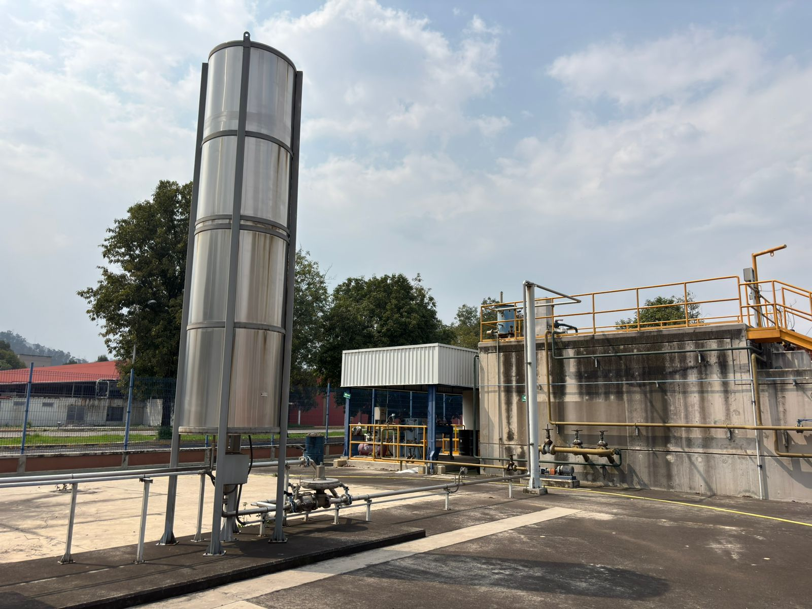
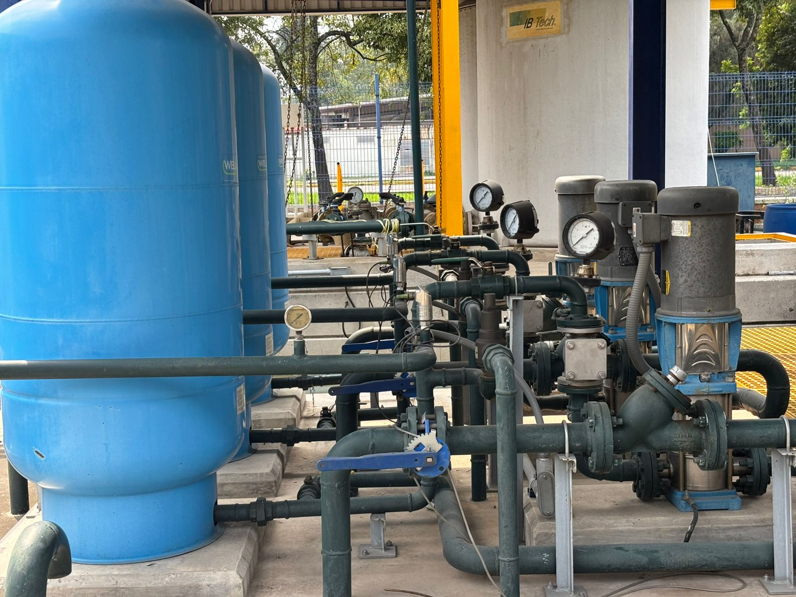
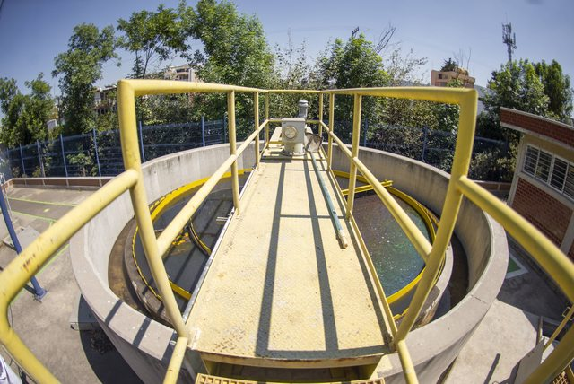
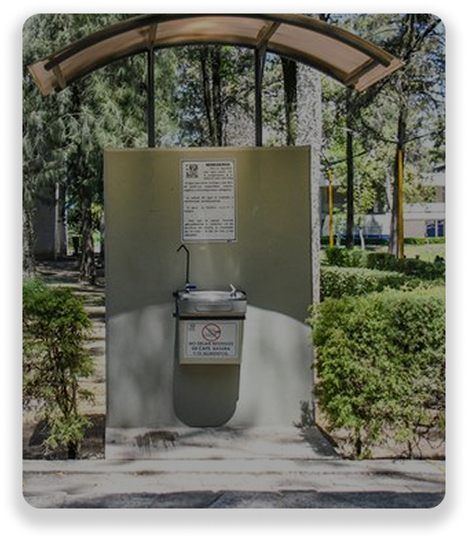
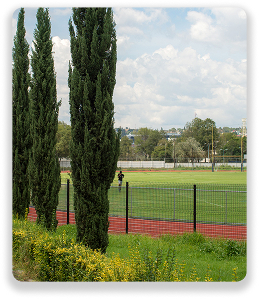
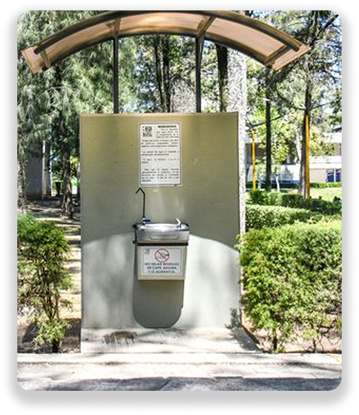
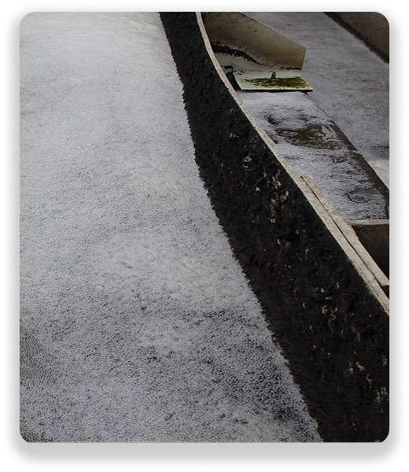

Planta de Tratamiento de Aguas Residuales (PTAR)
La PTAR de la FES Acatlán transforma el agua residual en bienestar ambiental.



¿Qué es la PTAR
La Planta de Tratamiento de Aguas Residuales (PTAR) de la Facultad de Estudios Superiores Acatlán es una infraestructura clave en el camino hacia un campus sustentable. Su principal objetivo es tratar las aguas residuales generadas por la comunidad universitaria, para ser reutilizadas en el riego de áreas verdes de la zona deportiva. Esta planta entró en operación en el año 2014 y representa una solución ambientalmente responsable al manejo del agua en la Facultad, alineándose con los principios de la Universidad Sustentable. Su operación no solo reduce el uso de agua potable mediante el riego, sino que también disminuye la carga de contaminantes vertidos al sistema de drenaje municipal. La PTAR es un espacio funcional, educativo y de innovación, donde convergen el conocimiento técnico y el compromiso con el medio ambiente.

¿sabías qué? ...
A pesar de que la Planta de Tratamiento de Aguas Residuales de la FES Acatlán es una instalación con importantes beneficios ambientales, aún existen muchas creencias erróneas sobre su funcionamiento y el uso que se le da al agua tratada. Aquí se aclaran algunos de los mitos más comunes:
El agua tratada no se usa en los bebederos de la FES Acatlán.

El agua tratada no se utiliza para consumo humano bajo ninguna circunstancia. Su uso está restringido a actividades no potables, como el riego de áreas verdes.
Los bebederos del campus se abastecen de agua potable que cumple con los estándares oficiales de calidad.
El agua tratada no es peligrosa para las plantas.

Al contrario, el agua tratada contiene nutrientes como nitrógeno y fósforo que benefician a la vegetación. Además, el proceso de tratamiento asegura que no cause daño a las áreas verdes de la zona deportiva.
Se pueden hacer actividades académicas en la PTAR.

La planta es un espacio vivo de aprendizaje: estudiantes realizan prácticas profesionales, visitas técnicas y proyectos de investigación enfocados en tratamiento de aguas y sostenibilidad.
El agua tratada no huele mal.

Debido al sistema de eliminación de malos olores (Biofiltros) y al tren de tratamiento funcional, el proceso y el agua tratada no huelen mal.
Lo que era un residuo ahora es recurso.

Desde 2018 que inicia el riego, se han utilizado casi 20 millones de litros de agua residual tratada, con el riego se brinda mantenimiento .